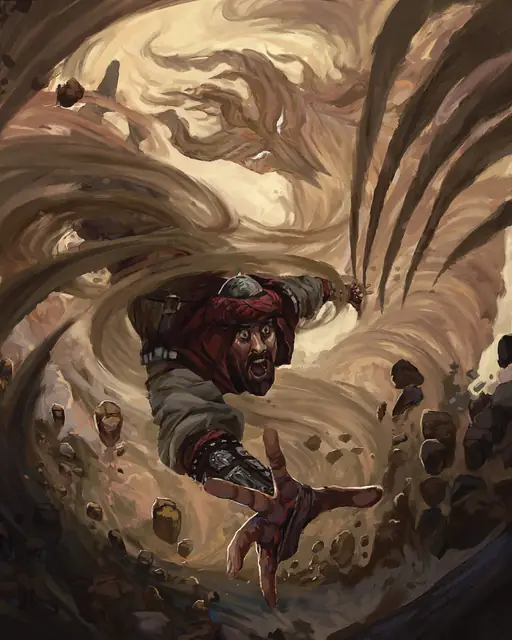

Невидимый охотник
Invisible Stalker
Большой Элементаль, Нейтральный

Класс Защиты 14 Инициатива +7 (17)
Хиты 97 (13к10 + 26)
Скорость 50 футов, Полёта 50 футов (парит)
| мод | спас | ||
|---|---|---|---|
| СИЛ | 16 | +3 | +3 |
| ЛОВ | 19 | +4 | +4 |
| ТЕЛ | 14 | +2 | +2 |
| мод | спас | ||
|---|---|---|---|
| ИНТ | 10 | +0 | +0 |
| МДР | 15 | +2 | +2 |
| ХАР | 11 | +0 | +0 |
Сопротивление урону Дробящий, Колющий, Рубящий
Иммунитеты Яд; Бессознательный, Истощение, Окаменевший, Опрокинутый, Опутанный, Отравленный, Парализованный, Схваченный
Чувства Тёмное зрение 60 футов, пассивное Восприятие 18
Языки Общий, Первичный (Ауран)
Опасность 6 (2 300 опыта; БВ +3)
Особенности
Воздушное тело. Охотник может входить в пространство враждебных существ и останавливаться там. Он может проходить через пространство шириной всего 1 дюйм, не тратя на это дополнительное перемещение.
Невидимость. Охотник Невидим.
Действия
Мультиатака. Охотник совершает три атаки Порывом ветра. Он может заменить одну из этих атак использованием Вихря.
Порыв ветра. Бросок рукопашной атаки: +7, досягаемость 5 фт. Попадание: 11 (2к6 + 4) Силового урона.
Вихрь. Спасбросок Телосложения: Сл 14, одно существо Большого размера или меньше в пространстве охотника. Провал: 7 (1к8 + 3) урона Звуком, и цель становится Схваченной (Сл высвобождения от захвата 13). Пока цель Схвачена, она не может творить заклинания с Вербальным компонентом и получает 7 (2к6) урона Звуком в начале каждого хода охотника.
Бонус мастерства +3
Среда обитания Город
Сокровища Отсутствуют
Невидимый охотник
Незримый магический убийца
Невидимые охотники — бесплотные духи воздуха, которые появляются на стыке магии и злобы.
Этих неуловимых существ трудно заметить, а их присутствие выдаёт лишь лёгкое дуновение ветра. Им подвластны могучие ветры, способные перемещать предметы и хлестать врагов. Практикующие магию призывают этих существ, чтобы те служили им в качестве убийц и воров. Невидимые охотники неустанно преследуют цель и редко оставляют следы на месте своих преступлений.
В редких случаях призвавшие невидимого охотника заклинатели теряют над ним контроль. Совершите бросок по таблице «Неуправляемый невидимый охотник» для вдохновения или выберите сами причину, почему одно из этих чудовищ бесцельно рыщет по области.
Неуправляемый невидимый охотник
| 1к6 | Невидимый охотник — это… |
| 1 | Дыхание безызвестного бога или чудовища. |
| 2 | Хранитель скрытого портала или магического места. |
| 3 | Последняя злобная мысль кого-то погибшего в великой битве. |
| 4 | Проявление неконтролируемой магии. |
| 5 | Слуга злого правителя стихии, такого как Стихийный Князь Злого Воздуха Ян-Си Бин. |
| 6 | Дух, не сумевший выполнить своё предназначение и ищущий возможности завершить миссию. |